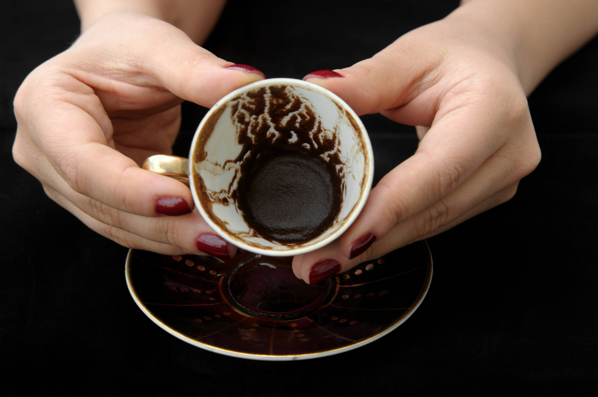

Curiosidades!
Por ser uma bebida muito famosa, o café aparece em vários lugares do mundo e possui várias curiosidades engraçadas. Aqui, você vai conhecer um pouco mais sobre o café, com alguns fatos engraçados sobre a bebiba.
1. O café é a segunda bebida mais consumida do mundo.
O café fica em segundo lugar no grupo das bebidas mais consumidas no planeta, perdendo apenas pra água!
2. O café com leite era uma bebida extremamente luxuosa.
Atualmente ninguém consegue começar o dia sem tomar o seu café com leite matinal, mas quando o café chegou no Brasil ele era consumido apenas por pessoas muito ricas! Isso se dá por conta da dificuldade para processar os igredientes necessários para fazer essa bebida.
3. A falta de café poderia causar divórcio na Turquia.
O café é uma bebida extremamente importante para os Turcos, sendo incluído até na legislação desse país. Existe uma lei na Turquia dizendo que se o marido não entregasse uma cota específica de café por mês para sua esposa, ela teria direito de pedir divórcio.
4. Pessoas vêem o futuro olhando café!
A cafeomancia é a arte de olhar o futuro usando borras de café, esse jeito de advinhar o futuro foi criado na França.
5. O Brasil é o maior produtor de café no mundo.
O Brasil é origem de cerca de 25% do café que existe no mundo!
6. "A bebida do Diabo"
O café já foi proibido em Meca e demonizado pelo Vaticano, sendo chamado de "Bebida do Diabo". Isso aconteceu porque ele foi criado no Oriente, que é considerado o "lado pagão" do mundo.
7. A origem do café expresso.
O café expresso foi criado em 1906 por George Washington, porém este George Washington não se trata do presidente dos Estados Unidos, e sim de um empresário da Guatemala!